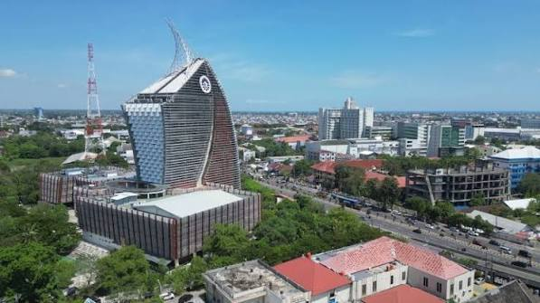
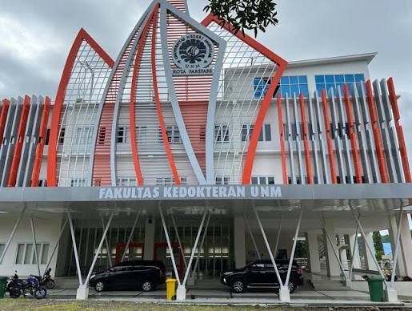
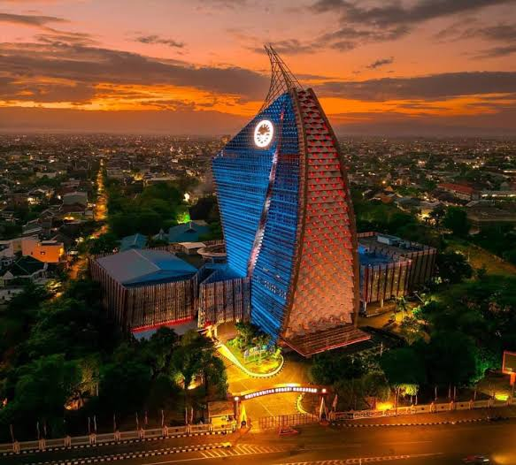
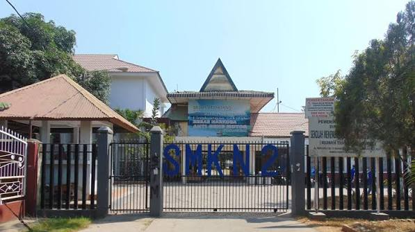
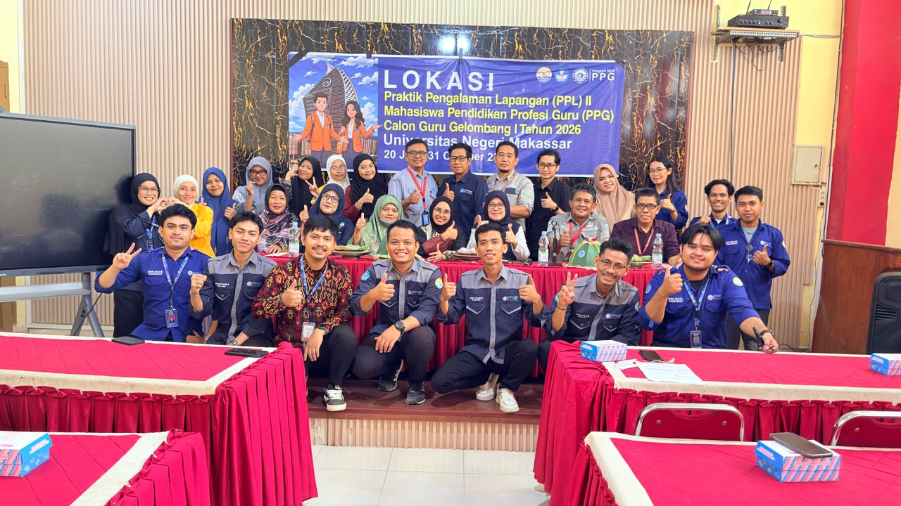
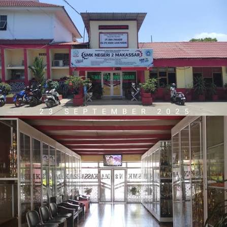
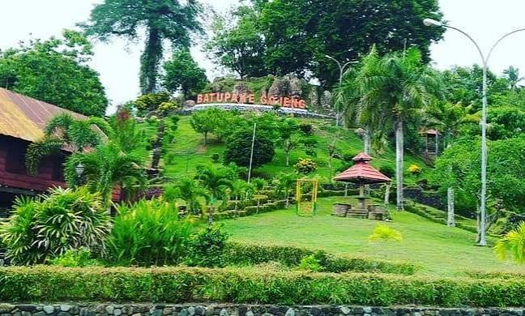

Selamat Datang
E-Portfolio Praktik Mengajar Mandiri
Ruang digital yang menampilkan seluruh dokumentasi, analisis, refleksi, serta bukti implementasi pembelajaran selama Praktik Pengalaman Lapangan (PPL) pada Program Pendidikan Profesi Guru (PPG) Calon Guru Gelombang 1 Tahun 2026 di SMK Negeri 2 Makassar, Program Keahlian Broadcasting dan Perfilman.
Profil Guru

- Nama Lengkap
- Nur Akifa Rifai, S.Sos.
- Nama Panggilan
- Akifa
- NIM
- 2590554950598
- Tempat, Tanggal Lahir
- Sinjai, 23 Februari 2003
- Bidang Studi
- Broadcasting dan Perfilman
- Program
- PPG Calon Guru Gelombang 1 Tahun 2026
- LPTK
- Universitas Negeri Makassar (UNM)
- Sekolah PPL
- SMK Negeri 2 Makassar — Program Keahlian Broadcasting dan Perfilman
- Guru Pamong
- Sitti Rohkma, S.Si., S.Pd., M.Pd
- Dosen Pembimbing Lapangan
- Dr. Sanatang, S.Pd., M.Pd.
Kampus LPTK Universitas Negeri Makassar
Jl. A.P. Pettarani, Makassar, Sulawesi Selatan


Universitas Negeri Makassar (UNM) adalah salah satu perguruan tinggi negeri terbesar di Indonesia Timur, berlokasi di Jl. A.P. Pettarani, Makassar, yang menyiapkan pendidik profesional melalui program PPG.
Sekolah PPL SMK Negeri 2 Makassar
Jl. Dr. Ratulangi No.128, Makassar


SMK Negeri 2 Makassar adalah sekolah kejuruan unggulan yang membekali peserta didik dengan keterampilan siap kerja, khususnya pada Program Keahlian Broadcasting dan Perfilman.
Asal & Keunikan Daerah — Sinjai
Sinjai dikenal dengan julukan "Bumi Panrita Kitta", memiliki kekayaan budaya dan destinasi wisata alam yang memukau seperti Hutan Mangrove Tongke-Tongke, Taman Purbakala Gojeng, serta keindahan gugusan Pulau Sembilan.
Mangrove Tongke-Tongke
Kawasan hutan mangrove terluas dan pelindung pantai yang asri.

Taman Purbakala Gojeng
Situs sejarah dan purbakala peninggalan masa lampau di Sinjai.
Inspirasi & Tujuan Menjadi Guru
Inspirasi saya menjadi guru tumbuh dari tekad untuk mencerdaskan kehidupan bangsa melalui pendidikan vokasi di bidang broadcasting dan perfilman yang kreatif, inovatif, dan berpusat pada peserta didik.
- Menjadi pendidik profesional yang reflektif dan adaptif.
- Mengembangkan pembelajaran penyiaran dan produksi media yang kontekstual.
- Mencetak talenta muda perfilman Indonesia yang kreatif dan berdaya saing.
"Karya terbaik lahir dari proses belajar yang tekun dan penuh ketulusan." — Nur Akifa Rifai
Analisis Produk Rancangan Pembelajaran
Manajemen Produksi Televisi
Modul Ajar
Berkas lokal: assets/modul-siklus-1.pdf (atau upload baru).
Kelebihan
Menggunakan model PBL dengan praktik langsung penulisan naskah dan penggunaan kamera.
Kekurangan
Alokasi waktu praktik pengambilan gambar perlu ditambah durasinya.
Perbaikan
Menyusun ulang manajemen waktu dan memperjelas rubrik asesmen praktik.
Teknik Tata Kamera dan Editing Video
Modul Ajar
Berkas lokal: assets/modul-siklus-2.pdf (atau upload baru).
Kelebihan
Pemanfaatan software editing dan kamera profesional secara langsung di lab penyiaran meningkatkan keterlibatan aktif siswa.
Kekurangan
Ketersediaan perangkat komputer editing secara bergantian memerlukan manajemen kelompok yang lebih terstruktur.
Perbaikan
Menerapkan sistem rotasi peran (Director, Cameraman, Editor) dan manajemen waktu shooting yang presisi.
Pascaproduksi dan Pengendalian Mutu Film Pendek
Modul Ajar
Berkas lokal: assets/modul-siklus-3.pdf (atau upload baru).
Kelebihan
Siswa mampu melakukan color grading, mixing audio, dan penyuntingan akhir secara mandiri berdasarkan skenario.
Kekurangan
Proses render dan ekspor video membutuhkan waktu lama sehingga manajemen durasi belajar perlu dioptimalkan.
Perbaikan
Menyiapkan berkas aset mentah lebih awal dan menggunakan preset rendering yang efisien.
Penayangan Publik dan Evaluasi Karya (Screening)
Modul Ajar
Berkas lokal: assets/modul-siklus-4.pdf (atau upload baru).
Kelebihan
Melatih mental tampil publik dan kemampuan memberikan kritik konstruktif antarkelompok melalui forum apresiasi film.
Kekurangan
Keterbatasan waktu tanya jawab di akhir sesi pemutaran karya akibat antusiasme diskusi.
Perbaikan
Mengatur batasan waktu diskusi per karya dan menggunakan rubrik penilaian umpan balik tertulis.
Analisis Materi Pembelajaran
Substansi Materi Broadcasting dan Perfilman
Analisis Materi
Materi dipilih berdasarkan kebutuhan esensial industri penyiaran dan perfilman masa kini.
Tujuan Pembelajaran
Disusun spesifik agar peserta didik menguasai teknik produksi audio visual secara komprehensif.
Revisi & Tindak Lanjut
Penyempurnaan dilakukan berdasarkan hasil refleksi tiap akhir siklus praktik.
Analisis Media Pembelajaran
Kamera DSLR/Mirrorless & Storyboard Sinematik
Unggah Berkas Media
Berkas lokal: assets/media-broadcasting.pdf
Analisis Penggunaan
Penggunaan kamera profesional dan storyboard visual memudahkan peserta didik memahami komposisi frame, pergerakan kamera (camera angle), serta teknik pengambilan gambar sinematik.
Analisis Video Mengajar
Rekaman Praktik Pembelajaran Mandiri
Link Google Drive Video
Masukkan tautan video atau gunakan video lokal assets/video-mengajar.mp4.
Catatan Analisis
Video memperlihatkan interaksi positif, pengelolaan kelas lab broadcasting yang tertib, serta ketercapaian kompetensi.
Analisis Kegiatan Nonmengajar
Kegiatan 3S (Senyum, Salam, Sapa) & Upacara
Membangun kedisiplinan, karakter religius, serta kebiasaan positif di lingkungan sekolah bersama seluruh warga SMK Negeri 2 Makassar.
Upacara Hari Senin
Melaksakan Upacara Setiap Hari Senin.
Pengelolaan dan Penataan Perpustakaan Sekolah
Membantu menginventarisasi buku referensi perfilman serta menata katalog literasi digital bagi siswa.
Maintenance Perangkat Lab Komputer & Editing
Melakukan pengecekan berkala pada perangkat PC editing video, kamera, dan instalasi software penyiaran.
Pendampingan Ekstrakurikuler Sinematografi & Teater
Melatih siswa dalam teknik akting di depan kamera, olah vokal, serta penyusunan storyboard produksi film pendek mandiri.
Koordinasi MGMP & Rapat Koordinasi Guru
Aktif mengikuti rapat koordinasi dewan guru dan Musyawarah Guru Mata Pelajaran (MGMP) tingkat sekolah kejuruan.
Panitia Kegiatan Porseni & Hari Besar Nasional
Berpartisipasi aktif sebagai panitia pendamping dokumentasi video dan juri lomba kreatif antar kelas dalam rangka peringatan hari nasional.
Kunjungan Industri & Hubungan Dunia Kerja (DUDI)
Mendampingi siswa SMK Negeri 2 Makassar melakukan studi lapangan dan sinkronisasi kurikulum penyiaran dengan stasiun TV lokal.
Kegiatan Jumat Bersih & Perawatan Lingkungan Sekolah
Memimpin kerja bakti bersama peserta didik dalam menjaga kebersihan lingkungan sekolah dan area studio praktik penyiaran.
Evaluasi PPL Bersama Guru Pamong & DPL
Melaksanakan sesi diskusi refleksi mingguan dan bimbingan akhir pelaksanaan praktik pengalaman lapangan bersama Dosen Pembimbing dan Guru Pamong.
Instrumen Penilaian & Lampiran
Berkas Pendukung Lengkap (Lampiran 7 & 8)
Seluruh perangkat asesmen, instrumen observasi, rubrik penilaian sikap, pengetahuan, dan keterampilan peserta didik telah dikurasi dan diverifikasi secara profesional.
Perangkat Asesmen Siklus 1 & 2
Dokumen lengkap rancangan asesmen formatif dan sumatif berbasis praktik broadcasting.
Berkas lokal: assets/perangkat-asesmen.pdf
Lembar Refleksi & Umpan Balik
Catatan refleksi mandiri serta umpan balik konstruktif dari guru pamong dan DPL.
Berkas lokal: assets/lembar-refleksi.pdf
Refleksi Diri
1. Hal yang Sudah Dipelajari
Selama PPL di SMK Negeri 2 Makassar pada Program Keahlian Broadcasting dan Perfilman, saya berhasil mengintegrasikan pendekatan Project-Based Learning (PBL) dan kerangka TPACK dalam pembelajaran tata kamera dan penulisan naskah. Saya juga memperdalam teknik pengelolaan kelas lab penyiaran serta penyusunan asesmen autentik berbasis rubrik kinerja film pendek.
2. Pengalaman Terbaik
Pengalaman terbaik adalah saat membimbing peserta didik memproduksi video pendek dan tata kamera secara langsung di lapangan.
3. Rencana Pengembangan Diri
Terus meningkatkan kompetensi pedagogik, menguasai teknologi editing mutakhir, serta memperkuat jejaring industri perfilman.